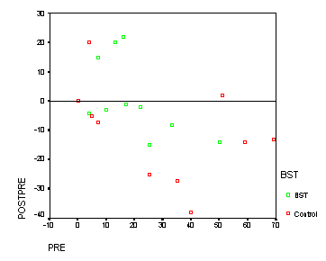
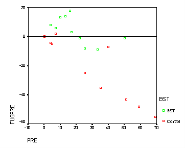
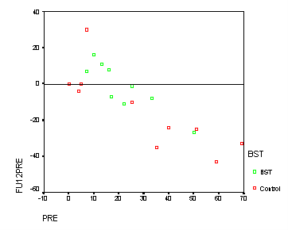

| / Home |
Keywords: One-way repeated measures with one between-subjects factor.
The data give the results of an study aimed at reducing the risk of HIV infection among African-American adolescents. The subjects were 14-18 year old female and male adolescents in a Southern USA city. The study compared two interventions. The treatment intervention was an 8-week Behavioural Skills Training (BST) program. The control was an single 2-hour education session about HIV and AIDS. The subjects completed sexual attitude and activity questionnaires before and after the intervention and at 6-month and 12-month follow-ups. The data here are for 10 subjects for each intervention although the original study was much larger. The data given here appear to have been created by Howell (1999) based on summary statistics from the original study. The dependent variable is the logarithm-transformed frequency of condom-protected sex ( log(Y+1) ).
| Variable | Description | ||
| BST | 1 = BST intervention, 0 = control | ||
| Pre | Log-frequency of protected sex before the intervention | ||
| Post | Log-frequency of protected sex after the intervention | ||
| FU6 | Log-frequency of protected sex reported at the 6 months follow-up | ||
| FU6 | Log-frequency of protected sex reported at the 12 months follow-up | ||
Data File (tab-delimited text)
| St Lawrence, J. S., Brasfield, T. L., Shirley, A., Jefferson, K. W., Alleyne, E., and O'Brannon, R. E. III (1995). Cognitive-behavioral intervention to reduce African American adolescents' risk for HIV infection. Journal of Consulting and Clinical Psychology, 63, 221-237. |
| Howell, D. C. (1999). Fundamental Statistics for the Behavioral Sciences, 4th Edition. Duxbury Press, Pacific Grove, California. Exercises 18.9 and 18.11. |
There is an interaction between intervention and time of measurement.



|
Home - About Us -
Contact Us Copyright © Gordon Smyth |